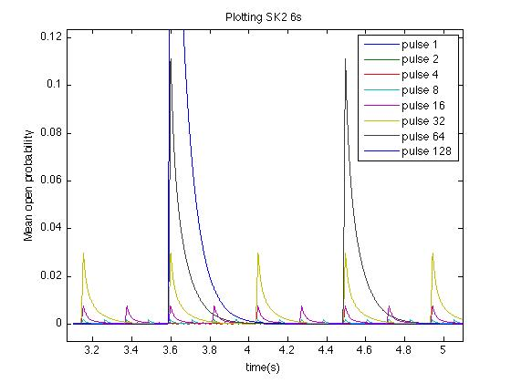
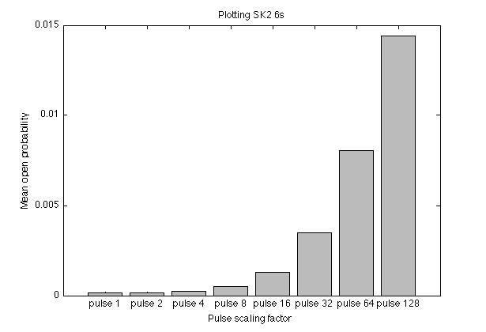

This minimal model investigates stochastic amplification of calcium-activated potassium (KCa) currents. Amplification results from calcium being released in short high amplitude pulses associated with the stochastic gating of calcium channels in microdomains. This model predicts that such pulsed release of calcium significantly increases subthreshold SK2 currents above what would be produced by standard deterministic models. However, there is little effect on a simple sAHP current kinetic scheme. This suggests that calcium stochasticity and microdomains should be considered when modeling certain KCa currents near subthreshold conditions. This model produces results similar to those in Figure 9 of Stanley et al (2011). It contains several other kinetic configurations that can be investigated as well. Note that the original data in Figure 9 was implemented in GENESIS rather than Matlab. Although the paper considers a CA1 pyramidal cell as an example, this could be relevant in other cell types as well, where KCa channels are coupled to a stochastic calcium source. Reference: Stanley DA, Spano ML, Ditto WL (2011). Stochastic amplification of calcium-activated potassium currents in Ca2+ microdomains. Journal of Computational Neuroscience. This implementation is by David Stanley, to whom questions should be addressed. Running the model: 1) Unzip file 2) Change directory (cd) in Matlab to folder containing plot_struct.m 3) Run plot_struct within Matlab. Model details: This model investigates the kinetics of SK2 and sAHP currents in response to calcium pulses. Briefly, the calcium signal consists of 14msec square pulses; pulse height and spacing are both variable. They are varied by multiplying by a scaling factor so as to maintain the mean value of intracellular Ca at 75nM. For example: "Pulse 1" represents deterministic calcium input, corresponding to a steady 75nM calcium signal. a deterministic model. "Pulse 2" consists of 14msec 150nM pulses beginning every 28msec. "Pulse 4" contains 300nM calcium pulses beginning every 56msec. etc... As pulse height is made larger, SK2 activation is greatly increased as compared to the "Pulse 1" case, which represents the calcium signal in a standard deterministic model. Customizing the model: Details for customizing the model can be found in the model customization section Sample model output: Figure 1: Open probability time series of SK2 channel in LPo regime.  Figure 2: Mean open probability of LPo SK2 channel. 